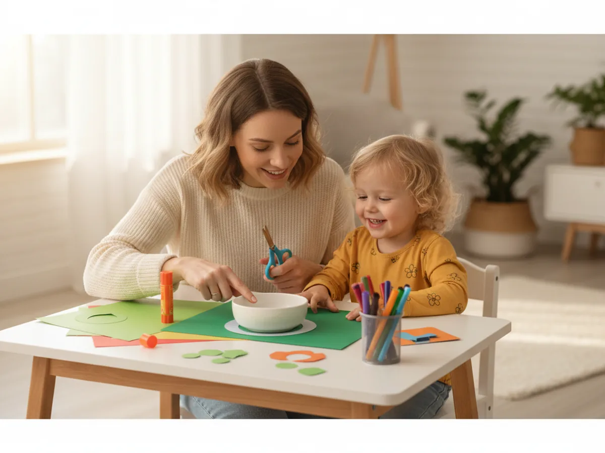
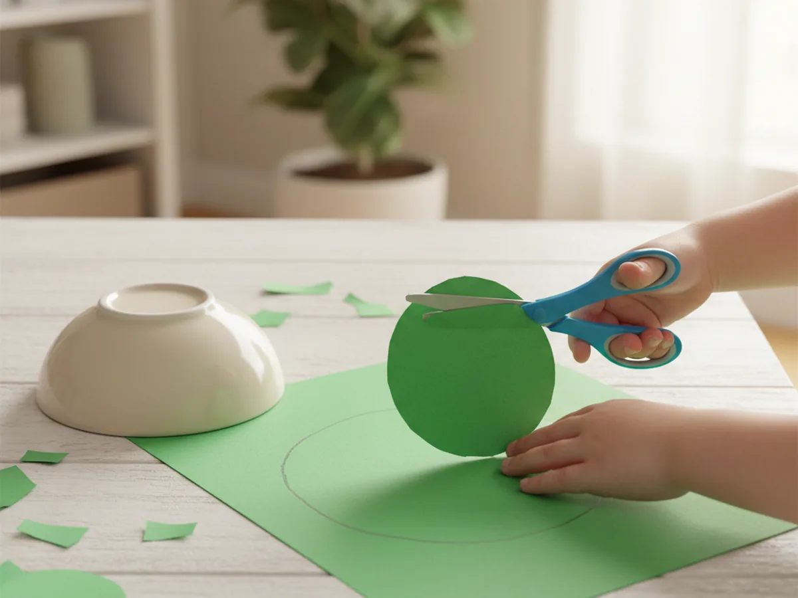
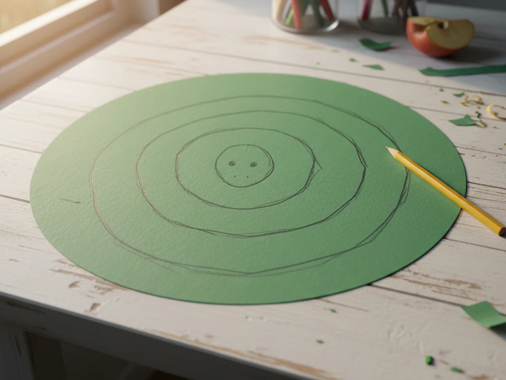
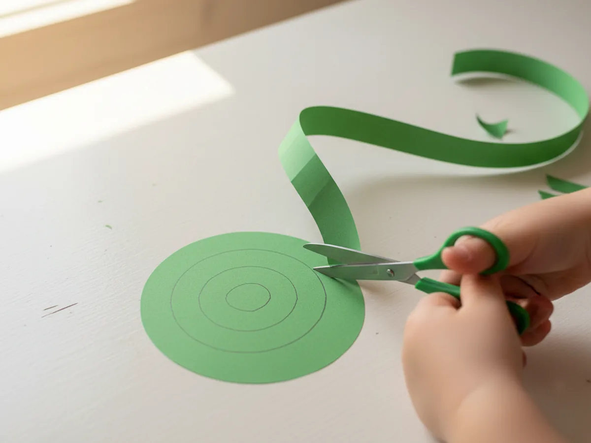
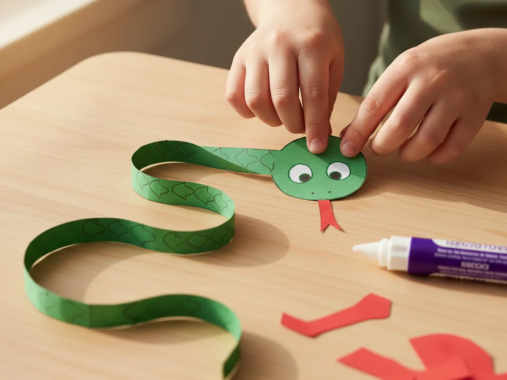
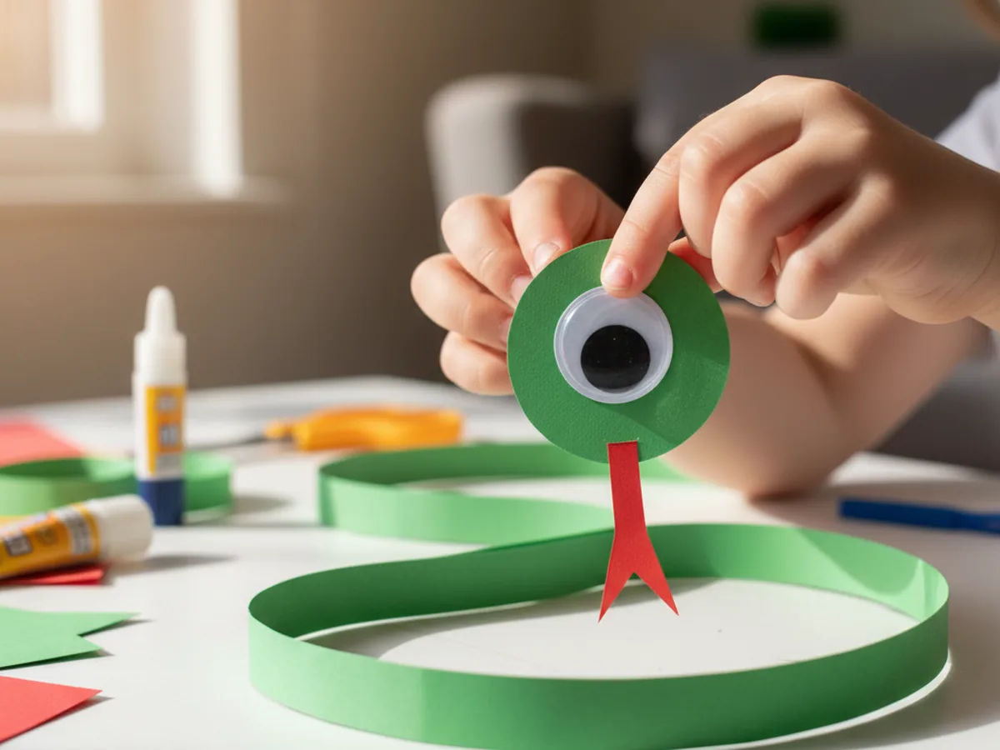
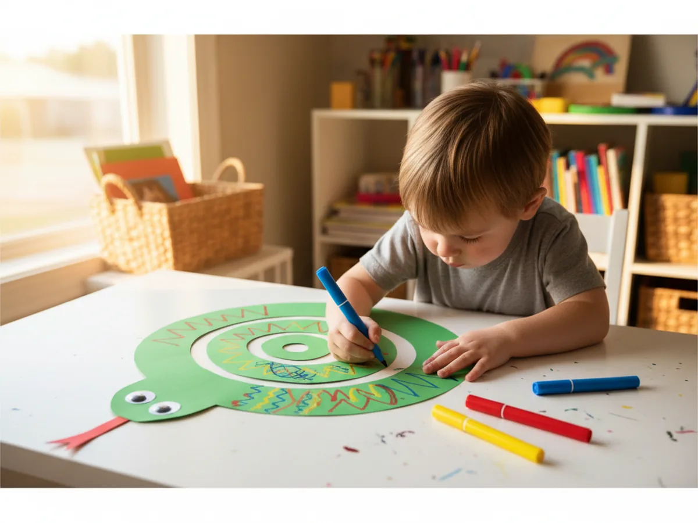

Making a paper snake craft with your kids is one of those activities that always gets a bigger reaction than you expect. You start with a simple circle of green construction paper, cut a spiral into it, and when you lift it up by the tail, a dangling, bouncy snake magically appears. Kids are genuinely amazed every single time. 🐍
The best part is just how easy it is. You need one sheet of construction paper, a pencil, scissors, a glue stick, and a googly eye. The whole project takes about 20 minutes from start to finish, and cleanup is nothing more than a few paper scraps. Whether you are looking for a rainy-day activity, a nature-themed project, or just a fun way to spend a quiet afternoon together, this easy paper snake craft delivers every time.
Why Kids Love This Craft
There is something genuinely magical about the spiral snake reveal. The moment your child finishes cutting and lifts the paper up, the snake stretches out and starts to spin, and the look on their face is priceless. That instant transformation from a flat circle to a three-dimensional dangling creature is exactly the kind of moment that makes crafting with kids so rewarding.
Beyond the wow factor, this paper snake craft for kids is packed with quiet developmental benefits. Cutting along a curved spiral line is a fantastic fine motor exercise that builds scissor control, hand strength, and focus. Little ones who are still learning to cut will feel a real sense of accomplishment when they manage the whole spiral. Older kids will enjoy the precision and the satisfaction of a clean result.
The decorating step at the end gives children total creative freedom. There is no wrong way to decorate a snake. Dots, stripes, zigzags, scale patterns, rainbow colors, all of it works beautifully, and every snake ends up completely unique. That sense of personal ownership over the finished result is something kids carry with real pride.

What You'll Need
Here is everything you will need to make this simple paper snake craft at home. Set it all out before you begin so the activity flows without any interruptions.
- Crayola Construction Paper (96 sheets, assorted colors), green for the snake body plus red for the tongue.
- Fiskars Blunt-Tip Kids Scissors, safe and easy for children ages 4 and up.
- Elmer's Disappearing Purple Glue Sticks (30-pack), washable and easy for small hands to apply.
- FEBSNOW Self-Adhesive Googly Eyes (200 pieces, 20mm), peel and press, no extra glue needed.
- Crayola Washable Broad Line Markers (10 colors), for decorating the snake's body with patterns.
- A pencil, for tracing the circle and drawing the spiral.
- A round household object like a bowl or pot lid, to use as a circle tracing guide.
Step-by-Step Instructions
This paper snake craft step by step is easy to follow from start to finish. Take it at your child's pace and let them do as much as they can on their own.
Step 1: Trace and Cut a Large Circle
Place a large round object, like a dinner bowl or pot lid, on a sheet of green construction paper. Trace around it with a pencil. Then have your child cut out the circle along the pencil line. The bigger the circle, the longer and bouncier the finished snake will be, so go as large as the paper allows. A standard 9x12 inch sheet gives you a satisfying snake size.
For children aged 3 to 4, pre-trace the circle for them and let them practice cutting along the line. Wobbly edges are completely fine here and actually add to the handmade charm.

Step 2: Draw a Spiral on the Circle
Place the green circle flat on the table. Starting near the outer edge, use a pencil to draw a spiral line that curves inward around and around toward the center. Keep each loop of the spiral roughly one inch from the previous one. When you reach the center, leave a slightly larger oval or circle shape uncut. That center piece will become the snake's head.
Aim for three to four loops around the whole circle. If you have a younger child, draw wider loops and thicker lines so they have an easier target to cut along.

Step 3: Cut Along the Spiral
This is the most exciting step. Starting at the outer edge of the circle, cut carefully along the pencil spiral line, turning the paper as you go. Keep cutting all the way around until you reach the center oval. Try to stay close to the pencil line without cutting into the spiral strip itself. When you finish, you will have one long continuous coil of paper with a round head at the center and a pointed tail at the outer end.
When you gently pick up the center circle and let the snake dangle, it will drop beautifully into a spinning, bouncing spiral shape. Let your child have that first moment of lifting it up themselves.

Step 4: Make and Attach the Tongue
Cut a small strip of red construction paper about half an inch wide and two inches long. Use scissors to snip a small V shape into one end to create the classic forked snake tongue. Apply a thin layer of glue stick to the plain end of the tongue and tuck it underneath the center circle, pressing it firmly against the underside so just the forked tip peeks out from the front of the head. Hold it in place for a few seconds while the glue sets.

Step 5: Add the Googly Eye
Peel the backing off one self-adhesive googly eye and press it firmly onto the top of the snake's head circle, positioned near the edge closest to the tongue. One eye is all you need for that classic sideways-facing snake look. The moment the googly eye goes on, the snake comes to life and suddenly has so much personality. Kids always want to give it a name at this point. 😄

Step 6: Decorate and Display Your Snake
Now hand your child the markers and let them go wild. A classic scale pattern is easy to draw: two rows of overlapping curved half-circles along the body, like roof tiles stacked on top of each other. But stripes, polka dots, zigzag lines, rainbow blocks, and swirls all look fantastic too. Let your child make the snake completely their own.
When the decorating is done, hold the snake up by the tail and watch it spin and sway. Tape a loop of string to the tail end and hang it from a curtain rod, bookshelf edge, or bedroom doorframe. Every time someone walks past, the snake gently moves, and it always makes people smile. 🌈

Variations to Try
Rainbow Snake: Use a different color of construction paper for each loop of the spiral before cutting. You can trace several spirals on different colored sheets, cut each one into a strip, and tape them end to end before displaying the snake. The result is a gorgeous multicolored rainbow snake that looks stunning hung near a sunny window.
Mini Snake for Toddlers: Trace a smaller circle and draw wider spiral loops so the strips are thicker and easier for little hands to cut. With fatter strips, even a two-year-old can manage the cutting step with a little guidance and still experience the full wow moment of lifting the finished snake.
Patterned Paper Snake: Swap plain green construction paper for a sheet of colorful patterned scrapbook paper, giftwrap, or even a page from a magazine. The existing print becomes the snake's scales without any extra decorating steps, and the result looks impressively detailed for almost no effort at all.
Final Thoughts
This paper snake craft is one of the most satisfying projects you can do with a young child. It is quick, low-mess, and genuinely magical in the way a flat circle of paper transforms into something alive and three-dimensional. You do not need any special supplies, no artistic talent required, and the finished snake makes a wonderful little decoration the whole family will enjoy.
The spiral cutting step is fantastic scissor practice for kids who are still building confidence with cutting, and the open-ended decorating means every snake turns out wonderfully unique. Whether your child makes one green snake or a whole family of colorful ones, this is a craft they will want to repeat again and again.
Hang yours up somewhere special and enjoy seeing it sway. Happy crafting!
More Crafts You'll Love
If your little one enjoyed this paper snake craft, these other fun animal paper crafts are perfect to try next: